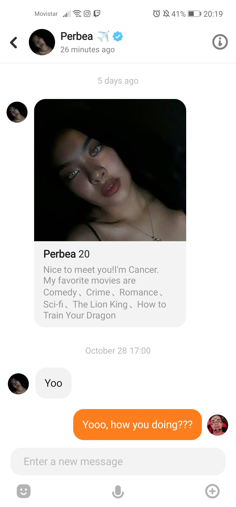
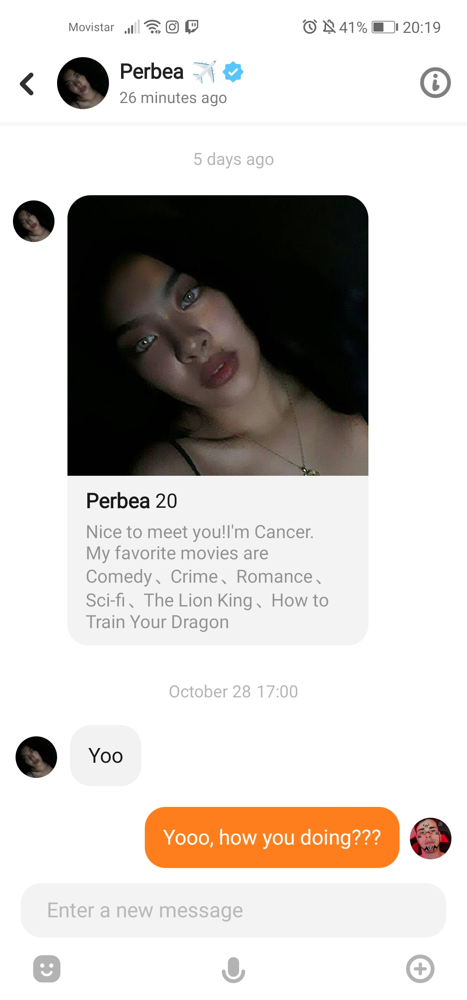

GOOOOD MORNING PERBEEEEAAA. Hope ganahan mo sa twist. I'm running out of ideas HAHAHAHHAHA but well as long as is with you, I'm sure the ideas will keep coming. Bitch u inspire me
so much you can't even know, for me you are like my muse, bautiful, smart and funny. You can't imagine what are my feelings when I'm around you. As you once told me, "you drive me crazy,
but not in a bad way, or like psycho way, but in a good way". I know this letter is not much different from the others, its just a text and the same, but well, it took me more time just
to make the design of the page, and the idea HAHAHAHAH but well, at the end the important is the message, what im saying and that I always think about you, as I told, since I wake up
till I go to sleep I keep thinking about you (AND EVEN SLEEPING, OK DONT THINK ITS RATED 18 BITCH, SOMETHING CUTE).
Bitch, your letters just hit different, they are so damn cute, and so damn beautiful, I close my eyes once i finished reading them and I imagine I'm with you. I know today is gona be
a weird day, because we are not gona do videochat or anything, and i've been used to do it, I'll miss it for sure. But well, even tho, i will keep an eye to the mobile, just to see if
you told me something so i can answer you. I'm not gona forget you just because i'm with my friends or so, yes they are my friends, but you are really special for me, so if i can, i will
talk to you (AND YES, DONT WORRY ABOUT IT IF I DO IT ITS BECAUSE I WANT TO, SO DONT TELL ME TO FOCUS ON MY FRIENDS, I CAN DO BOTH). OH BTW DID YOU TOLD UR FRIEND ABOUT ME?? IM CURIOUS HEHE.
I know you like to look like you are a rock, but thats not true, or at least, not with me. You haven't showed that to me at all, you are really sweet, really caring and everything. So
its not a bad thing to sentir mariposas en el estomago. Don't try to hide them its something good and meaningful for us. I can say, that i see you as someone that really dont want to go
fast because you feel like maybe it can hurt you, so thats why u maybe try to hide a bit some of these feelings, but don't do it pls, trust me more than you do now. Bitch im not going to
hurt you.. Bitch i love how careful u treat me, yesterday was a bit awkward at first with ur brother, because u were talking and didnt understand anything so i was feeling a bit like
i didnt belong there. But when u started talking me on IG i really felt ur love. BITCH I WILL MAKE U FEEL THE HAPPIEST PERSON IN THE WORLD SO STAY WITH ME AND LETS GROW TOGETHER.
Your nerdy glasses
Good morning to my one and only 18/11/2021
BIIIIIIIIIIIIIITCH, HOW DO I TELL U THIS, TODAY WAS A HELL OF A DAY, bro, i know its bc of ur period, but damn, my heart, my brain and everything, couldn't handle are ur love bitch holy
shit HAHAHAHHAHA i fucking loved it. I can spend my whole life talking to u, and not getting bored a single second with someone as you. Perb, u are my person, u are my world, u are evertything
and in 20 days, u showed that, it's true it scared the hell out of me, but i dont fucking care, amma take the risk, amma risk it all, i dont care, imma give to you everything i have. It
took me only 20 days(acc less) to realize how perfect u are for me. Every cute world u say to me, every smile u give to me, every feels like a dream when im with u, and i dont want to
wake up from that dream, only if its bc u told me to wake up and go kiss u.
My feelings for u, are not even close to anything i have felt before, already told you that, every time u say something about that u talked about me to someone, it makes me
feel so special, like if im someone important, and i know u already told me that, and i should trust u on that, and i do bitch, but well, this things just makes me feel much better.
My life without you now will feel so empty, like something is missing, and i dont wanna feel that any day, not in a long time. I already told u on call, but i've never been so sure
of something in my entire life, as im sure that i wanna spend my whole life with you and give all i have to you. I want you to trust me, and i wanna trust you my fullest. No secrets,
no hidding anything (well, having secrets its okay HAHAHAHAH but i mean like secrets and things that can hurt our relation).
I'm so grateful that u explained to me all that stuff about ur past, ur mother things, and ur past loves and everything, it mades me feel you even more and trust you even more. You are
a fucking strong girl, with a big heart and much love to show, thats why im not going to leave u anywhere soon, and i wanna spend as long as u let me of that road that is called life
with you beside me. Im not going to lie, but i think today we spent like 10 hours talking bc my insta says 6 hours, and scener + discord are like 4 HAHAHHAHAHA so imagine bitch, 10 fucking
hours and i will spent 10 more. I wanna say with everything i have, that i fucking love you so much, just take it the way u want to take that, and my heart and cake, are all yours.
I've spent my entire life
looking for the perfect girl, but what is perfect for me, might not be perfect for everyone. Everyone wants someone to talk about sex, I want someone who I can talk about
aliens, superpowers, clothing, weridstuff and love.. So can you give me the pleasure to say to you, that IT'S YOU I COULD LOVE, ACCTUALLY? (that's not the answer to be my gf dont
worry HAHAHAHAH)
Your guarro
For the love of my life, Perbea
Goood morning my beautiful girl. I think today i feel so inspired to create something beautiful in today's letter hahahahah, so lets try. Mi amor, I feel so happy and so
grateful being able to call you my girlfriend. I've said it a lot of times, but amma say it again, you don't even know what u mean from me, in 6 days we gona be 1 month since
i know you, and i couldn't ask for a better month at you side, we been talking for HOURS every day, and spent my whole time with you, and i can't say anything other than that
every minute i've spent with you have been the happiest i've been in a long time, every night, i go to sleep thinking about you, thinking about us, thinking about the desire i have to
see you, touch you, feel you, kiss you, and explore with you, and i fall asleep with the biggest smile someone can have, bc im with the best person possible.
I could never imagine falling in love with someone so far away from me, with such a different culture and everything, but someone with whom i have a lot in common as you Perbea.
Distance sucks its true, not being able to see you in person hurts a lot, but we can overcome this as we doing. We need to keep trying to do different activities till im able to
travel to Philippines, bc if u really think im not going, u dont know me HAHAHAHAH, ill be there the first one. Bitch, u kinda right im impulsive, its true, but im impulsive bc
i feel really comfort doing this stuff for you, im not saying just bc im crazy, i am crazy but im also in love, i could never do this stuff for someone that is not worth. And what can i
say, im a fucking crazy romantic bitch, so be ready for that stuff, bc amma keep doing this stuff, even when we are 30 years together (bc we gona be together for all our life or at least
i hope so hahahahah)
I have said this a lot of times too, but my feelings for you are not even close to anything i felt before, and i just know that if i work hard for this relationship it can last long, so
im going to try my best, give you all i got and im going to leave my whole soul for this relationship. Amma be true to you okay? Im going to explain a bit of me. Before knowing you, i had
no hope for any relationship at all, I was really heartbroken. As you know i had 3 relationships, 1 was useless, just pointless, the other i got cheated on i was heartbroken and couldn't
be on a relationship or anything for more than a year, and the last one was broken bc we didnt connected. I felt like i was doing everything bad, then i met you. This beautiful, perfect
and smart girl, with everything on her so special and unique that gave me a reason to keep believing in love. You don't know how much u helped me with everything, and thats why I
don't want to regret anything with you, I'm going to give all I have for you, amma be the best version of myself, just for you.
This is being a hell of a long message HAHAHAHAHA im going to end it here. Bitch, i cant wait for keep discovering you, all your secrets, slowly, hope i can keep discorering more,
I don't know if u have more little or big secrets you have to tell me, but if u have, dont be scared of telling me, you know u can trust me, just when u are ready i hope u will
tell me all of them. I havent told you in all the letter that i love you, but i think it keep pretty clear what my feelings are, i know sometimes im a bit clingy with too much
I love you, and too much cringe stuff that i say to you, i know it can be too much and be annoying, but thats who i am HAHAHAHAHA a clingy bitch. I love you so much my love, for
more days to come.
Yours, for ever, your nerd.
Happy 1 month
So, as i told you I had another surprise ready for today, I didnt wanted to send this to you till after the 28 of Nov at 5pm, bc thats when we started talking, thats the day
you told me "Yoo", the first message, and the first word of our relationship, that was the start of everything. And look at us now, we both together, we are boyfriends, and
we are discovering what is having a serious relationship together. For me, this also new, because i never had that feeling before, that feeling of true love, such as the love
you can have with ur parents, the fucking true love that makes you feel safe and in home. Thats the feeling I have everytime I see you, and I dont know, i could never have
expected to meet someone on an App and feel that thing. I could never have expected to meet my soulmate on a stupid application such as TanTan, but here we are, FUCKING BOYFRIENDS.
I have enjoyed every single moment i've spent with you, even the bad moments, bc with all of them makes us what we are now. Even that moment when we thought that was over, it was
made u take the decision to be with me, and u really felt the true love at that moment, so we can say that we are here thanks to that low moments in our short time. But now,
everything is going in the right direction and now we both know what we want from each other, and expressing that feelings, so we can keep growing and improving the relationship.
Because, if we want to keep going with this, and on a LDR, we need to trust in each other, and say what we feel. And im sure this is going to work if we keep doing like that.
And so proud to call you my girlfriend now, and really i feel like im in a dream with you, it all feels so perfect and so amazing that my heart is going to explode HAHAHAHA.
Yesterday night was one of the best moments in my life, telling you all my feelings and all i told you was amazing, even tho i was drunk, all that i said was true and what i feel,
i want to do everything we talked, from the chuchu stuff, to traveling, to discovering the earth together and discover our passions together, ALL OF THAT, TOGETHER.I love that u
make me feel so special, talking about me to ur friends, dad, mom and everyone, it feels so good and so special being with you.
As i told you before, i love seeing you fighting with ur hair, smiling, sneaking to watch me on discord and taking videos of us, its just amazing, and everyime i see you i just feel
like i have won the lotery with you. Every message, every single word we exchange, it just makes me feel so appreciated, and i know that sometimes i dont take ur compliments, i mean bby,
i take every one of the compliments, but its just that I underrate myself, so i dont think that way, but obvisuly i appreciate it and i feel loved when u tell me that things, so keep
doing it and dont surrender with me. You dont have to care for any other girl, because why i would change the best girl in the universe for someone that is clearly worse. You don't need
to worry aboyt that because im yours and u are mine, so im not even worried for ur guys (well maybe a little but slowly HAHAHAHHAHA) I WANNA BE YOURS SO BAD (U KNOW WHAT I MEAN ;) ).
But babe, now we are officially 1 month together, and im not drunk, lemme ask you the question again.


 
